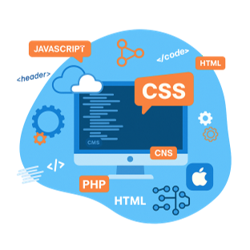

ТЕХНИКА И ИНЖЕНЕРИЯ
Профессия Backend-разработчик

Он пишет код, разрабатывает бизнес-логику веб-приложений. Работает над внутренней частью веб-ресурсов.

Задает алгоритм работы и обеспечивает корректное выполнение пользовательских запросов.

Сердце каждого
цифрового продукта
Backend обеспечивает работу всех ключевых функций: от авторизации до обработки данных. Без него не существует ни одного полноценного веб-сервиса или приложения.

Спрос продолжает
расти
Компаниям постоянно нужны backend-разработчики для поддержки масштабируемых и стабильных систем.

Высокие
зарплаты даже на старте
Backend-специалисты стабильно входят в топ самых оплачиваемых IT-профессий.

Международные
возможности
Backend нужен везде — от стартапов до международных корпораций. Это даёт возможность работать удалённо с клиентами по всему миру.
Чем больше опыта — тем выше заработная плата
По данным “Хабр Карьеры”, средняя зарплата Backend-разработчика — 210 000 ₽
100 000 ₽
200 000 ₽
от 330 000 ₽
Востребованность и перспективы профессии
Backend-разработка актуальна для любого бизнеса, у которого есть свой веб-сайт или мобильное приложение. Веб-разработчики востребованы в ИТ, финтехе, медицине, электронной торговле, образовании и в стремительно растущей сфере искусственного интеллекта и машинного обучения.
Аналитический отчет «Хабр Карьеры» показал, что бэкэнд-разработка — самая востребованная специализация на сервисе:
Топ 5 специализаций, которые искали в 4кв 2024

ОСНОВЫ
Как связаны frontend и backend разработка

Frontend, или клиентская сторона. Это внешняя часть веб-сайта, с которой взаимодействуют пользователи. Сюда относят пользовательские интерфейсы и любые элементы, которые можно вывести на экран браузера с помощью HTML, CSS и JavaScript.

Backend, или серверная сторона. Это программно-аппаратная часть веб-приложения, которую не видят пользователи: они не знают о работе внутренних процессов и не могут на них влиять. Бэкенд находится на сервере — мощном компьютере, который отвечает за хранение данных и обработку поступающих запросов.
ОСНОВЫ
Взаимосвязь между сервером и клиентской стороной веб-приложения
Кратко этот цикличный процесс можно описать так:

ШАГ 1
ШАГ 2

ШАГ 3
ОСНОВЫ
Обязанности Backend‐разработчика

Настройка DevOps-процессы
Настраивает DevOps-процессы: Docker, CI/CD, облачные платформы (AWS, Heroku).
Работает с СУБД
Проектирует архитектуру приложения и строит таблицы в реляционных базах данных.
Внедряет сторонние сервисы
Участвует в проработке продукта и интеграции новых фич (платежные шлюзы, OAuth-провайдеры и так далее).
Настраивает API
(REST/GraphQL) для взаимодействия фронтенда с базой данных и сторонними сервисами.
ОСНОВЫ
Стек разработки — что это такое
Обычно бэкенд-разработчики заняты написанием серверного кода, разработкой логики работы приложения и поддержанием его инфраструктуры.
Что нужно знать backend-разработчику
Чтобы начать карьеру в разработке, специалист уровня Junior Developer должен овладеть определенным стеком знаний и технологий.
Стек — это набор всех инструментов, которыми владеет разработчик. Обычно он используется для разработки веб-приложений и состоит из языков программирования, фреймворков, баз данных и различного ПО.
Что может входить в стек разработки